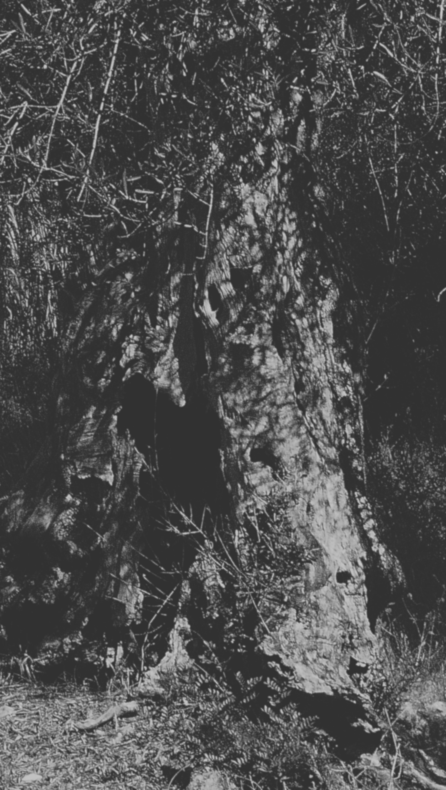
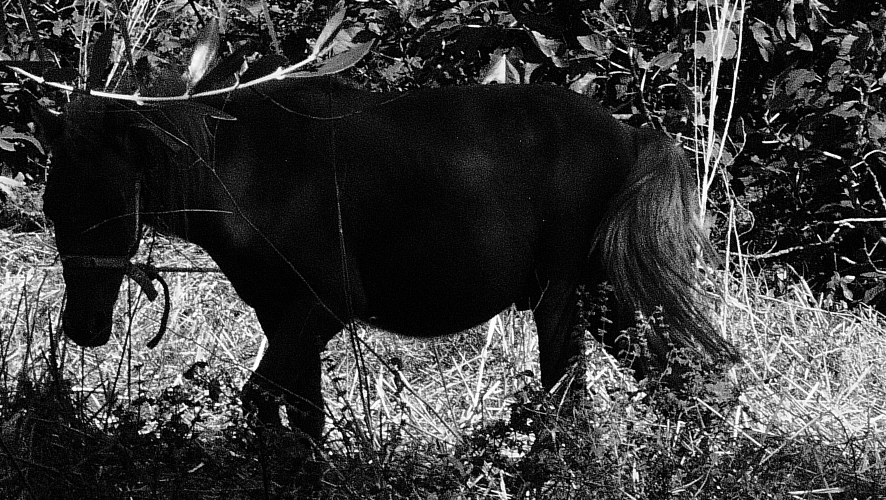
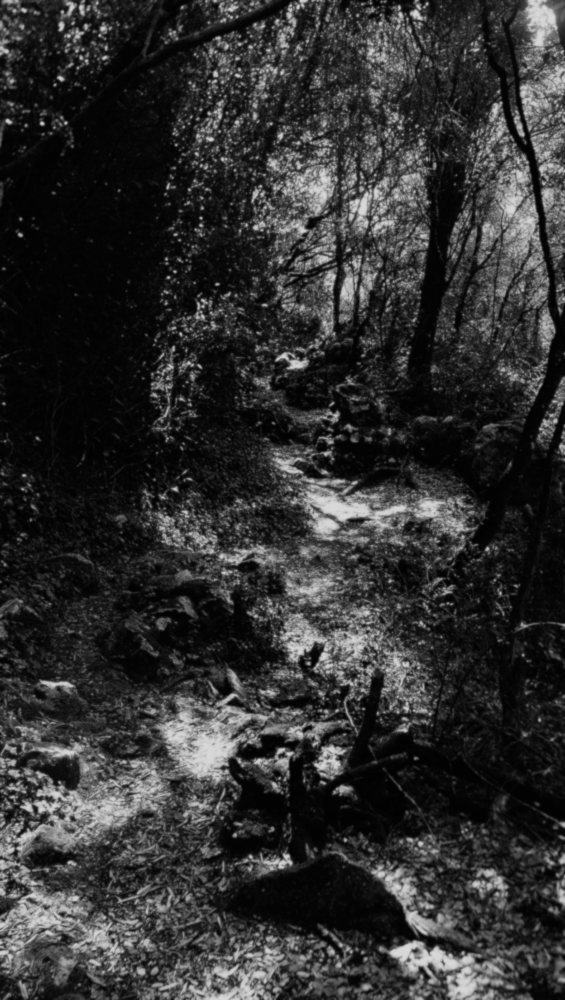
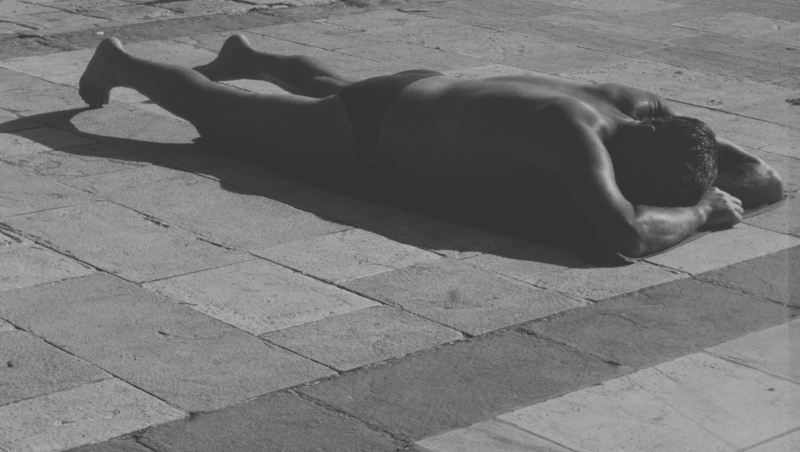
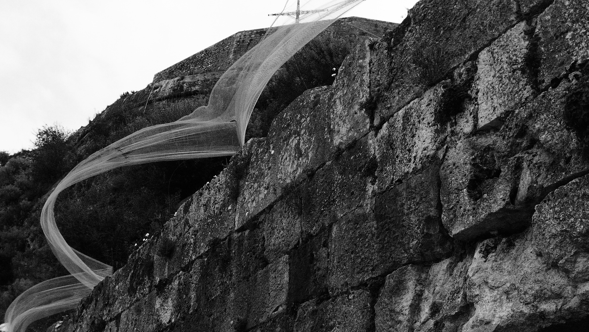
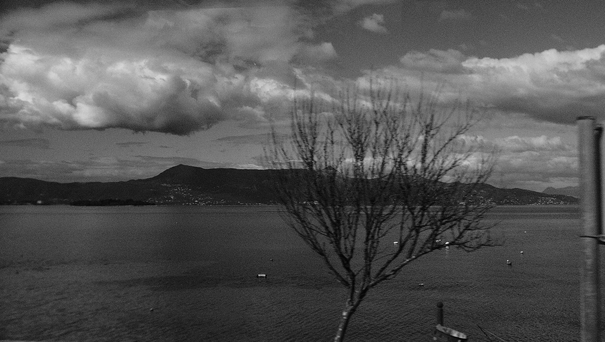
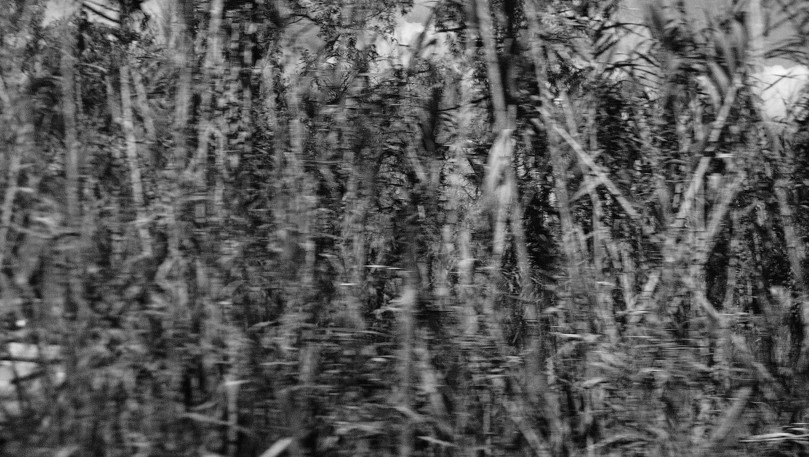

master's thesis extract
corfu. islands imaginaries
The Receding Ruins on Which the Island Stands and Falls. Performative philosophical practices on (in)visible areas on the island of Corfu. Extract from the master's thesis: Imaginaries and Contemporary Island Phenomenologies: The Case of Corfu Island.
Keywords: Corfu Island, ruins, island imaginaries, dark ecology, phenomenology, environmental solidarity, island temporalities, nonviolent imaginaries.
The Island as Boundary and Site of Imagination. Arriving from Albania to Corfu, the island does not present itself as a unified paradise. What appears instead are fragmented, abandoned, mist-covered territories: strange and inhabited, beloved and forsaken. The shifting landscapes disrupt the established discourse of islandness. The central question of the research is: what practices of interacting with conflicting island landscapes and abandonment can be implemented to initiate the invention of nonviolent island imagination, ready to encompass various island times and diverse visions of the future?
The challenge is to engage with the island's stories without reproducing a colonial (Thomas, 1994; Bal, 2012; Bosma, 2008; Wekker, 2016; Schinkel, 2018) or conventional archipelagic tradition (Baldacchino, 2007, 2018; DeLoughrey, 2007; Hau'ofa, 2008; Pugh, 2018; Sheller, 2009), but rather to perceive how the history of violence against islands through their imagined narratives manifests on Corfu. The research asks whose stories should be followed, where the researcher should disappear to allow the landscape to speak, and what disturbances (Tsing et al., 2017) and troubles (Haraway, 2016) can be heard behind the imagined island.
The research elucidates the concept of the island as a boundary, as (non)transparency, and as a site of imagination through specific processes, histories, interactions of entanglements, and the (un)hospitality of actors. It examines the island and its performative ruins, the ways in which a unique anthropomorphic but rewilded touristic nature is composed, becoming a new wilderness that redefines conceptualisations of islands. The discourse engages with Timothy Morton's dark ecology (Morton, 2007, 2013), Donna Haraway's concept of staying with the trouble (Haraway, 2016), and Anna Tsing's disturbances and borders of capitalism (Tsing et al., 2017). Islands become crucial for study because, at boundaries and amidst ecological crises, we increasingly find ourselves on islands.
Phenomenology of Ruins and Island Imaginaries. The first ruin encountered on Corfu is an overgrown pasta factory near the port. On these islands, ordinary ruins do not exist; they either go unnoticed or linger in a zombie-like state as tourist attractions. In the study of island imaginaries, this factory ruin connects not with economic or political contexts but with the island imaginary itself. In oceanic and maritime imaginaries, islands function as laboratories, storages, camps, or sites of assemblage; their narratives are often already written.
The island imaginary oscillates between the permissible recognition of the island through pre-existing imaginings and the impermissible scrutiny of territories absent from external imaginaries. It operates on a fine edge between imagining a non-existent island and holding a non-specific image that vividly describes the island without dismantling expectations.
From a phenomenological perspective, abandoned places are understood through subjective experience (Husserl, 1982). The body's interaction with the environment shapes experience of space; embodiment is central to phenomenological understanding (Merleau-Ponty, 1962). Ruins embody complex temporality, functioning as remnants of the past while suggesting possible futures. They are dynamic sites where time is layered.
In the context of geontologies (Povinelli, 2016), these abandonments articulate a nonlife that can be included in biogeography: how land, climate, flora, and fauna coexist and participate in the struggle for life, and how human perception shapes these features over time (Grove, 1995). Abandoned places are perceived as by-products that integrate and scale island temporalities and spaces (Lefebvre, 1991; Morton, 2013).
Paths, Beaches, and Liminal Spaces. Walking south of Paleokastritsa, the path does not lead to desired destinations but catapults through temporalities into hyperobjective spaces (Morton, 2013) on the island's western coast. It begins in backyards, enters dense thickets, passes discontinuities, crosses hotel grounds, and reaches beaches that remain nominally public. Deep grottos open from the landward side while boats pass below, yet the path remains unnoticed, concealed by vegetation and reflected light.
Beaches are liminal and politically complex spaces that define island boundaries and transform the island into a wild paradise in colonial imagination. Bodies on the beach, their arrival and departure, the movement of stones, all become part of vibrant materiality (Bennett, 2010). In dark ecology, the beach is where hidden ecological interactions become visible: plastic pollution, extractive infrastructures, and climate hyperobjects.
Edward Said's imagined geographies (Said, 1979) become relevant: the island was often reimagined to fit fantasies of northern European tourists, creating a narrative of the Mediterranean as an exotic, timeless paradise, distant from northern modernity (Stelder, 2017).
Ecological Entanglements: Salt, Olives, Water. The salt flats of Lefkimmi, closed in 1988, transformed into a wetland and migratory bird stopover. Salt trading was a state monopoly during the Venetian era, with seasonal reconfiguration and landscape alteration, much like contemporary tourism. These sites illustrate disruption and resilience.
The fish farms at Antinioti Lagoon and the operations at Gouvia and Korission Lagoon exemplify material interplay of natural and man-made structures (Bennett, 2010). The navigable Messoghi River and the river of Lefkimmi show how ecosystems adapt and flourish in the absence of direct human control.
The olive groves of southern Corfu, with trees possibly planted 400 years ago, became crucial to this research. The sound of cicadas carries stories of colonialism, land use, and cultivation. Seasonal harvest reflects deep interdependence between human activity and ecological systems. Pruning and ground preparation become acts of care, resilience, and adaptation within dark ecological frameworks.
Sheltering from rain in the sea, where rainwater meets warmer saline water, produces an extraordinary moment of entanglement: two bodies of water merging. This challenges the idea of nature as separate and pristine, and foregrounds dynamic systems shaped by anthropogenic action (Morton, 2007).
Tourism and the Violence of Island Imaginaries. Modern capital often makes it easier to leave ruins than to transform them, easier to create future ruins during construction. The rise of mass tourism in Corfu, beginning with the first airport in 1937 and the Corfu Palace Hotel in 1958, formed part of a wider Mediterranean process recasting local landscapes for northern expectations.
Tourism development marginalised local communities and traditional livelihoods, while abandoned buildings became shelters for refugees and migrants and monuments to former residents. Island societies are repeatedly exposed to climate vulnerability, political dependencies, and economic reliance on tourism (Baldacchino, 2018).
Toward Performative Philosophical Practices. The research proposes performative practices in spaces such as olive gardens to foster environmental solidarity and reimagine Corfu's future: ecopoetic performances, dialogue circles, and counterhistorical narratives where non-human actors become storytellers.
Ruins, ghosts, and other actors of dark ecology provide dynamics for contemplating non-violent discourse about islands (Tsing et al., 2017). Speaking with ruins and abandoned places, and discussing diverse island futures through liminal spaces, becomes central to performative research on Corfu.
The project envisions islands not as tourist destinations but as vital spaces of ecological and cultural resilience, where collective human and non-human voices form a phalanx of resilience: strength found in diversity, in queer intersections of existences, transcending linear narratives through cyclical flows and interwoven relationships.
References.
Bal, M. (2012). Travelling Concepts in the Humanities. University of Toronto Press.
Baldacchino, G. (Ed.). (2007). A World of Islands: An Island Studies Reader. Institute of Island Studies.
Baldacchino, G. (Ed.). (2018). The Routledge International Handbook of Island Studies. Routledge.
Bennett, J. (2010). Vibrant Matter: A Political Ecology of Things. Duke University Press.
Bosma, U. (2008). Post-Colonial Immigrants and Identity Formations in the Netherlands. Amsterdam University Press.
DeLoughrey, E. (2007). Routes and Roots: Navigating Caribbean and Pacific Island Literatures. University of Hawaii Press.
Grove, R. H. (1995). Green Imperialism. Cambridge University Press.
Haraway, D. J. (2016). Staying with the Trouble: Making Kin in the Chthulucene. Duke University Press.
Hau'ofa, E. (2008). We Are the Ocean: Selected Works. University of Hawai'i Press.
Husserl, E. (1982). Ideas Pertaining to a Pure Phenomenology. Kluwer Academic Publishers.
Kimmerer, R. W. (2013). Braiding Sweetgrass. Milkweed Editions.
Lefebvre, H. (1991). The Production of Space. Blackwell.
Merleau-Ponty, M. (1962). Phenomenology of Perception. Routledge.
Mignolo, W. D. (2018). The Colonial Difference in Hugo Grotius. Duke University Press.
Morton, T. (2007). Ecology without Nature: Rethinking Environmental Aesthetics. Harvard University Press.
Morton, T. (2013). Hyperobjects: Philosophy and Ecology after the End of the World. University of Minnesota Press.
Povinelli, E. A. (2016). Geontologies: A Requiem to Late Liberalism. Duke University Press.
Pugh, J. (2018). Relationality and Island Studies in the Anthropocene. Island Studies Journal, 13(2), 93-110.
Rosello, M. (2001). Postcolonial Hospitality: The Immigrant as Guest. Stanford University Press.
Said, E. W. (1979). Orientalism. Vintage Books.
Schinkel, W. (2018). Against Integration. De Gruyter.
Sheller, M. (2009). Infrastructures of the Imagined Island. Environment and Planning A, 41(6), 1386-1403.
Stelder, M. (2017). A Sinking Empire: Decolonizing Dutch History. Duke University Press.
Thomas, N. (1994). Colonialism's Culture. Princeton University Press.
Tsing, A. L., Swanson, H. A., Gan, E., & Bubandt, N. (Eds.). (2017). Arts of Living on a Damaged Planet. University of Minnesota Press.
Wekker, G. (2016). White Innocence: Paradoxes of Colonialism and Race. Duke University Press.
gallery
corfu documentation





